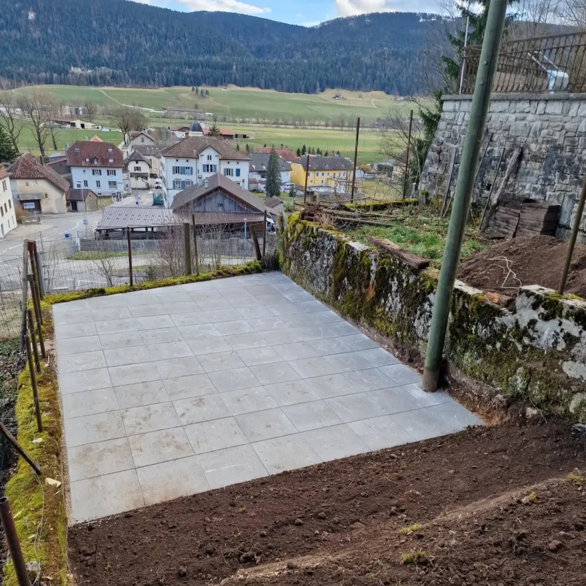

Terrassement & Génie civil — Val de Travers
Etienne Terrassement prend en charge l'ensemble de vos travaux de génie civil dans le Val de Travers et ses environs. Murs de soutènement et ouvrages divers : notre équipe intervient avec précision et savoir-faire sur chaque projet.
Que ce soit pour une construction neuve, une extension ou un aménagement public, nous réalisons des ouvrages solides et durables, dans le respect des normes et des exigences techniques. Notre connaissance du terrain local nous permet d'adapter chaque intervention aux spécificités de la région.
Basé à Môtiers, nous connaissons parfaitement les spécificités du terrain dans le Val de Travers. Notre équipe expérimentée garantit un résultat solide, conforme et durable. Chaque chantier de génie civil est mené avec rigueur, dans le respect des délais et du budget convenus.
Contactez-nous pour un devis gratuit et sans engagement.
Demander un devis